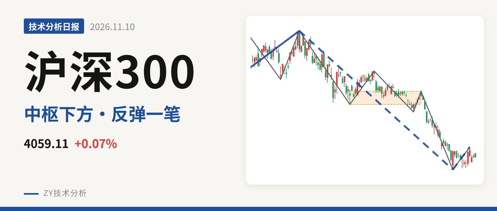
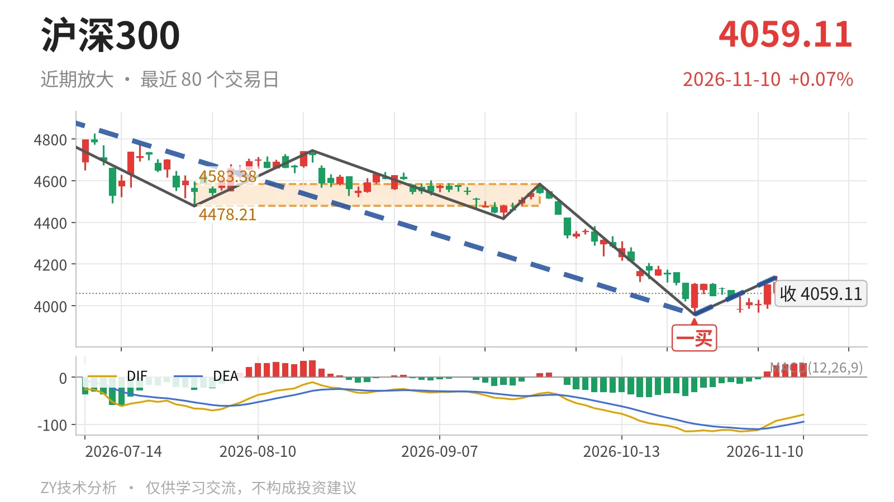

沪深300｜反弹未回4478点，下跌段未结束

最近日线中枢 4478.21—4583.38点，收盘位于中枢之下
一句话：日线下跌线段仍在延续，反弹未回4478点，结构偏弱。
🧭 走势结构：更大级别上涨未坏，日线下跌段仍在延续
当前仍处在2024年2月2日至2026年6月23日上涨走势的调整段里。该上涨段从3108.35点到5064.27点、涨约63%，还没有走完；6月23日至10月23日的下跌段随后展开，跌21.8%后还在延续。日线线段上，6月23日至10月23日下跌线段由5064.27点落到3958.14点，至今没有结束；10月23日至11月5日只形成一笔反弹，尚未构成线段。因此日线级别仍属于下跌段，反弹没有改变结构。

📍 中枢与位置：价格在最近日线中枢下方，中枢下移
最新收盘 4059.11点 已经跌破最近一个日线笔中枢。该中枢为7月30日至9月22日形成，区间 4478.21—4583.38点，尚未完成；最新价低于下沿约9.4%。此前2月3日至3月17日中枢为4578.21—4720.86点，下沿从4578点下移至4478点，中枢明显下移。最新DIF为-79.4，仍在零轴下，价格落在下移中枢的下方，弱结构没有扭转。
🎯 买卖点：10月23日一买后反弹未成线段
10月23日一买 3958.14点 已经出现，所在的9月22日至10月23日下跌笔已经结束。之后10月23日至11月5日上涨笔最高到 4136.80点，但离最近中枢下沿4478.21点还有明显距离。3月24日一买4394.29点之后，10月23日创出3958.14点新低，这个一买只对应更小级别反抽。10月23日一买暂时未被新低破坏，目前仍保留为日线笔级别低点；但反弹只有一笔，连线段都不构成，力度偏弱。

📉 背驰：下跌段内部未出现标准底背驰
这轮下跌没有形成干净的日线底背驰。6月23日以来的日线下跌线段还在延续，底背驰要落到这段内部同向下跌笔上。6月23日至7月30日下跌笔绿柱面积650，DIF低点-66.5；9月22日至10月23日下跌笔价格创出新低3958.14点，绿柱面积收窄至494，但DIF低点继续下探至-115.1。面积收缩、DIF却更低，这不是标准的“新低不新弱”。10月23日一买更像是小级别背离引发，日线下跌动能未完全衰竭。
🔎 关键位置观察：反抽不回4478点，结构构成三卖
短线结构压力看 4136.80点，即4137点附近；重新站上该位置，反弹才有从一笔扩展为线段的可能。更核心的是最近日线中枢下沿4478.21点，即4478点附近；反抽若回不到4478点上方，结构上构成该中枢的三卖，6月23日以来的下跌段延续。重新站上4478点并回到中枢内部，下跌更可能只是中枢扩展。下方观察10月23日低点3958.14点，若后续跌破3958点，该一买将降级为小级别反抽。整体结构偏弱，弱在价格位于中枢下方且反弹未成线段。
⚠️ 本文为基于公开行情数据的缠论技术结构记录，由程序自动计算并生成，仅供学习交流，不构成任何投资建议。市场有风险，投资需谨慎。